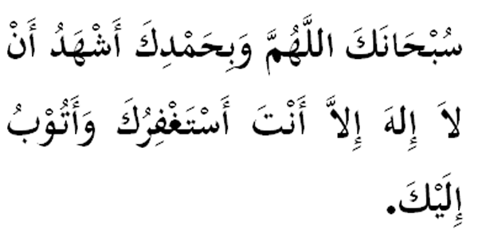

|

Terjemahan "Maha Suci Engkau ya Allah dengan segala kebesaran dan tahmid. Aku jadi saksi dan mengaku bahawa tiada Tuhan lain kecuali Engkau. Aku pohon ampun dariMu akan segala dosa kesalahan." Fadhilat Wirid Jubair bin Mat'am (RA) berkata bahawa Rasulullah bersabda: "Barangsiapa yang membaca (bacaan di atas) hingga akhir, dalam mana-mana majlis zikir, maka adalah sama seperti meterai (cop) yang dimeterikan atasnya dan jika di baca dalam majlis-majlis yang bukan zikir adalah sebagai kifarat (penutup segala kesalahan dan dosanya)." (Riwayat An - Nasa'ie, Thabrani dan Al - Hakim) |